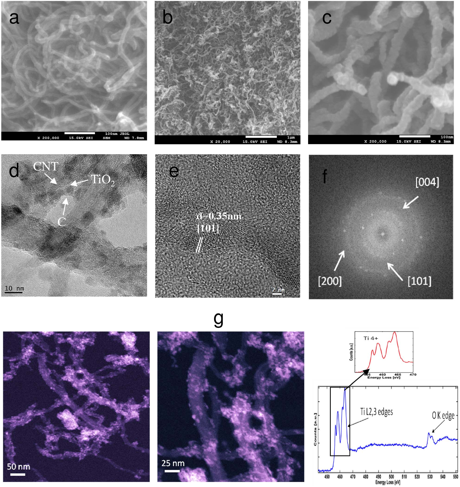
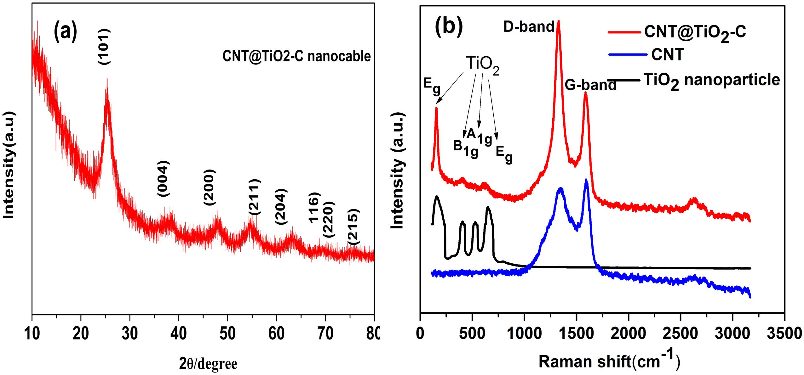
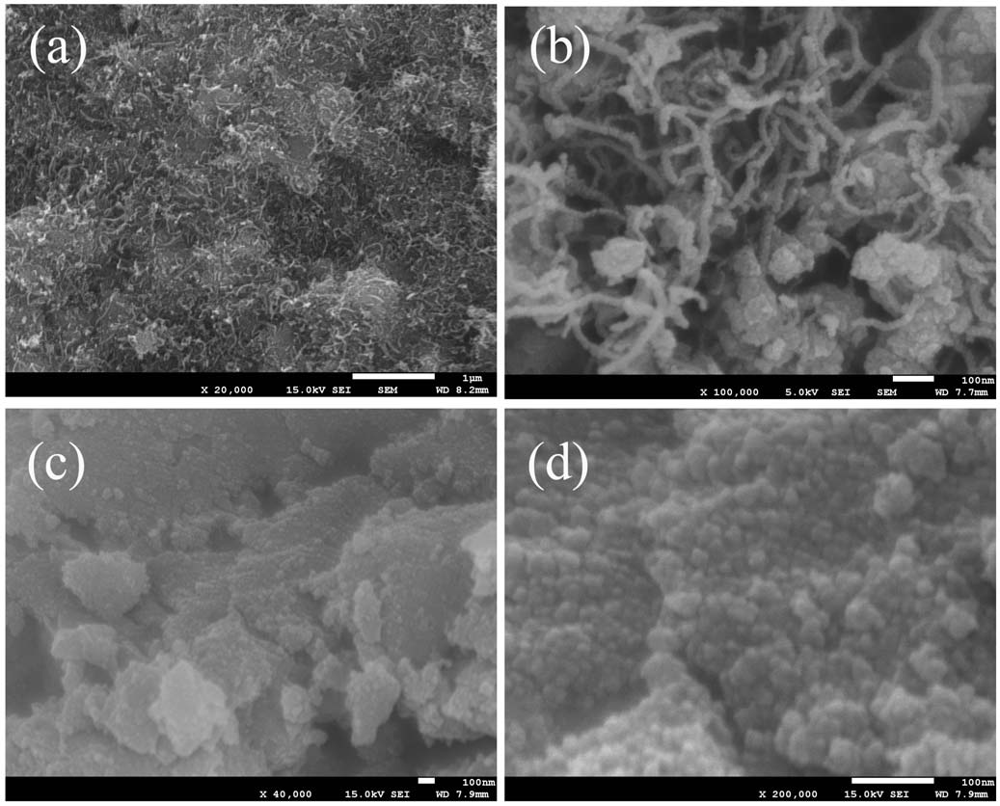
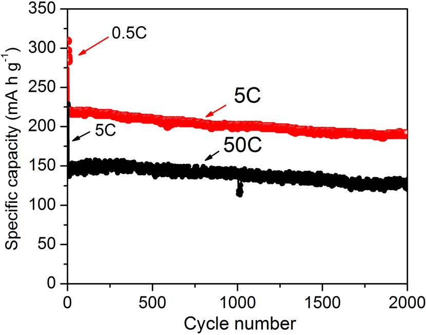

Schematic illustration of the one-pot hydrothermal routine to prepare CNT@TiO 2-C nanocable with the assistance of glucose.
Figure 1

Morphology and structure. SEM images of (a) pristine CNT and (b,c) CNT@TiO 2-C nanocable; (d) TEM image and (e) HR-TEM image of CNT@TiO 2-C nanocable; (f) Fast Fourier transform pattern of (e); (g) Annular dark-field scanning transmission electron microscopy (ADF-STEM) Z-contrast image of CNT@TiO 2-C nanocable and electron energy loss spectrum of the TiO 2 supported on the CNT.
Figure 2

(a) XRD pattern of CNT@TiO 2-C nanocable; (b) Raman spectra of CNT@TiO 2-C nanocable, TiO 2 nanoparticle, and pristine CNT.
Figure 3

SEM images of (a,b) CNT/TiO 2 composite prepared by hydrothermal reaction in the absence of glucose and (c,d) TiO 2 nanoparticles prepared by hydrothermal reaction in the absence of glucose and CNT.
Figure 4
Electrochemical measurements. (a) Representative cyclic voltammograms of the CNT@TiO 2-C nanocable electrode at a scan rate of 0.1 mV s −1; (b) The first charge-discharge voltage profiles and (c) The rate capability of the CNT@TiO 2-C nanocable, CNT/TiO 2 composite and commercial TiO 2 nanoparticle electrodes; (d) Comparison of rate-capability of a variety of TiO 2-based high-rate electrodes reported recently.TiO 2-graphene 16, CNT-TiO 2 nanocrystals 41, TiO 2-RuO 2 13, TiO 2 nanosheets 42, TiO 2 mesocrystals 43, SWCNT-TiO 2 10, TiO 2 nanosphere/graphene 44.
Figure 5

Cycling performance of the CNT@TiO 2-C nanocable electrode at high current rate of 5C and 50C (the first 5 cycles is cycled at low rate).